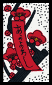
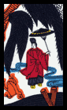
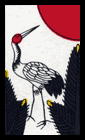
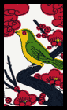

Gardening is a Hanafuda cards game for 2 players.
Object:
Each player, by drawing cards from a shared draw pile, and by manipulating his and his opponent's discard piles, seeks to "plant flowers" in his garden. The first player to have all four cards of any suit in their garden wins.
Setup:
Shuffle the cards and deal 5 to each player. The remainder, set to one side, becomes the shared draw pile.
Drawing & Planting:
A turn consists of drawing one card--hereafter called a "flower"--from the shared draw pile, optionally planting flowers in the space in front of him--hereafter called his "garden"--if able, and mandatory discarding of flowers to his discard pile--hereafter called his "shelf"--if holding more than 5. A player's turn ends only once there are no more than 5 flowers in his hand.
During his turn, a player may plant flowers if he meets one of the following requirements:
- He may plant 3 flowers of the same suit together if he is holding all 3 in his hand.
- He may plant a flower singly if there is at least one flower of the same suit in his garden.
Any number of flowers may be planted each turn as long as one of the requirements are met, and a garden may contain any number of flowers.
Discarding:
During his turn, if he holds more than 5 flowers, a player may discard a flower to his shelf. He may NOT discard while holding 5 flowers or less.
Many flowers produce specific effects when discarded, and it is possible for shelved flowers to return to play through these effects, whichs will be explained in the next section.
A player may not end his turn until he is holding 5 flowers or less.
Discard effects:
Blank red scrolls
When one of these flowers is discarded, the player chooses one flower from his shelf to return to his hand.
Purple scrolls
When one of these is discarded, the player chooses one flower from his opponent's shelf to return to his hand.
Inscribed scrolls

When one of these is discarded, the player chooses one flower from his shelf to return to his hand together with all other flowers in his shelf of that suit.
The Eye
When this is discarded, the player's opponent must play with his hand revealed. The effect lasts until a flower is planted in either garden.
The Deer
When this is discarded, each shelf is counted. The shelf with the most flowers--or both shelves in the case of a tie--are reshuffled into the draw pile. The Deer itself is not included in the count, nor is it reshuffled with the other flowers.
The Boar
When this is discarded, the player MUST if able choose one planted flower in either garden to be destroyed. Place the destroyed flower in its owner's shelf.
The Butterflies
When this is discarded, the player takes one flower from his opponent's hand. He then gives his opponent one flower from his own hand. (He may not see the flowers in his opponent's hand unless his opponent is under the effect of The Eye)
Rain

When this is discarded it becomes immediately planted, bypassing the normal requirements for planting flowers.
Rain is destroyed and placed in its owner's garden when a Bird flower is planted in the same garden, unless the bird is of the same suit as Rain and they are planted together, as explained in the next section.
Sakura Bloom
When this is discarded, the player must choose one flower from either shelf to return to the bottom of the draw pile. Sakura Bloom cannot be chosen.
The Rice Bowl
When this is discarded, the player draws a card.
The Dock
When this is discarded, it is placed in the opponent's shelf. If and when the last card from the draw pile has been drawn, The Dock immediately becomes planted in whichever garden contains the other three flowers of that suit, if any, bypassing the normal requirements for planting (its owner wins the game).
Miscellaneous effects:
Birds


These flowers bypass the normal requirements for planting in that they may be planted together with only 1 other flower of the same suit.
They also trigger Rain to be destroyed and placed in the player's shelf, if existing in the same garden, unless both Rain and the Bird from that suit are planted together.
The Moon
If The Moon is planted, it and all flowers of its suit in its owner's garden are immune to the effect of The Boar.
Game end:
The game ends when one player has four flowers of one suit in his garden, or when the draw pile is empty. The latter results in a tie.